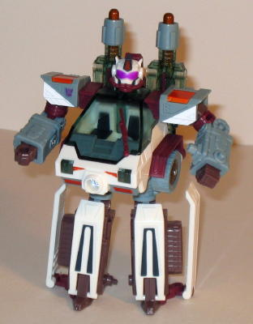
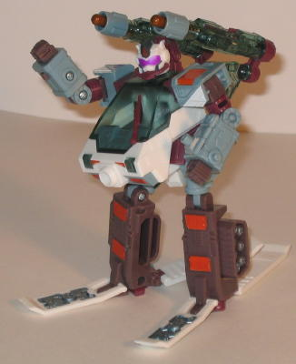

Snow Cat's vehicle mode
is, appropriately, some kind of futuristic snow vehicle. I'm unsure exactly
what it is, or even if there's a real-life counterpart to it. There's a
rounded wheel in the front, but treads in the back, so go fig. Anyways,
this mode is okay, but I wouldn't go any farther than that. The robot parts
tend to fit together rather haphazardly on the back half of this mode-
the missiles don't quite fit in flat with the legs, which in turn makes
the arms tucked in above the missiles to bend at a slightly angle, and
it all just feels very loose. A few extra pegs back there would really
have done wonders. Snow Cat's lone Powerlinx port, on a small piece on
the top of this mode that can rotate around to various places, also tends
to snap off way too easily (although it can easily be put back on, so don't
worry). The color scheme and mold and paint detailing on this toy is great,
though, and everything complements everything else pretty well. Probably
the highlight of this mode is the see-through cockpit on the front. There's
two painted seats inside (although, alas, the windows can't open up or
anything), and it all looks rather realistic. The headlights on the front
are also see-through- a rather needless extra, but nonetheless appreciated.
Snow Cat is also, I believe, the first Transformer ever that has an moveable
windshield wiper. There's even a flat quarter-circle molded on the otherwise
somewhat bumpy windshield to simulate the wiper cleaning away any accumulating
snow. It's a pretty nice detail.
Snow Cat's "hyper" vehicular
mode is actually above-average for a hyper mode. It's not much, but he
now has skis in the back, little mini-skis under his front wheels, and
missile launchers that pop out of his sides. It's actually how the vehicle
mode should have been originally, really... The joints that hold up his
missile launchers aren't that strong, though, so they tend to rotate back
into Snow Cat's main body a bit too easily.


Snow Cat's robot mode
is... not so great. Here's a tip for future Transformers, Hasbro: If you're
going to make the front of a vehicle mode become a robot chest, make sure
that it's a relatively flat front. Otherwise, you end up with a Transformer
like Snow Cat, with a very goofy-looking huge potbelly. The Decepticon
spark crystal that's essentially used as a belly button doesn't help his
look much, either. Proportionally, Snow Cat's arms are also a little on
the short side, although it admittedly looks worse than it is because of
his large stomach. The instructions say to put part of Snow Cat's skis
on the sides of his legs, like in the first picture shown above, but I
personally prefer put them behind his legs. Not only does this look better,
but it gives Snow Cat a little extra stability. Another small beef I have
with his lower body is that his feet are too small- it looks like they're
barely poking out of his legs. One thing I do like about Snow Cat's robot
mode, though is his face detailing. It looks like he has some ski goggles
on and almost some kind of oxygen mask, as if it were to help him "breathe
properly" in a snow drift or at high altitudes or something. It adds quite
a bit of character, and is rather original. His articulation is also great-
he can move at the head, the shoulders (at 4 points!), the elbows, the
waist, the hips, and the knees.
Snow Cat's robot mode
also has a kind of a sub- "hyper" mode- his missile launchers swing over
his shoulders, and his feet become skis for some on-the-go Autobot blasting.
It's actually a fairly cool sub-mode, and I actually like Snow Cat in this
configuration more than in just his normal robot mode.
Snow Cat does have some
positive points, like his nice color scheme, articulation, and his hyper
modes, but he simply suffers too much in both of his modes from the mode
he's not currently in. In vehicle mode, it's his not fitting well together;
in robot mode, it's his huge stomach. As such, I can't wholeheartedly recommend
him. In fact, I'd say he's the worst of the Energon Decepticons, at least
as of this writing (6/04). He's not really bad or anything, but you can
definitely do better than this guy when it comes to the Deceps.
Review by Beastbot
Second Opinion by VBBN
Difficulty of Transformation
: Easy
Rating
: 7.5
Something not noted in
Beastbot's review, is that Snowcat's vehicle mode and robot mode are actually
part of a Transformers/G.I. JOE crossover idea, but he ended up being put
in Energon. Snowcat's vehicle mode is modeled after the 1985
G.I.
JOE Snowcat toy
, and is very accurate to it in most retrospects. It's
cockpit is exactly similar to the G.I. JOE Snowcat, with the windshield
wiper. Even the Hyper mode parts like the front skies were mudguards on
the original toy. The only huge difference is how the missle launchers
are single shot, and hide in vehicle mode. It would have been nice if it
had the snowcat sticker on the side, but it's not a huge deal. I also think
the placement of the two back wheels (tiny rollers since the treads dont
move) are in a bad place.
In his Vehicle Hyper
mode, Snowcat is okay. The skis make him faster, but since there never
was any snow on Cybertron and sking on space isn't possible, I question
why this would make sense. But in any case, it's fairly cool. As for the
loose cannons, mine are nice and tight.
In Robot mode, Snowcat
is meant to look similar to the driver figure that came with the original
toy. It pulls this off fairly well. The goggles on the face ae almost carbon
copies of what the driver wore, and were a slightly translucent purple,
another nice homage that Snowcat shows. A few little mold details are similar
to the old figure as well. Now let's get to the...not so good things. First,
his chest is fairly pudgy and sticks out really far. This was a common
problem with Armada and Energon figures, some more than others (I'm looking
at you,
Armada Red Alert
) Snowcats legs are...strange.
First, his feet, as Beastbot explained, are barely feet, more of little
stilts. The ski pieces on his legs may look cool, but it restricts knee
movement backwards if you pull them to the back of his legs like me, as
it loks better. I prefer to take the panels off (unlike Beasty, I don't
mind extra items to store.) and it looks much better. Articulation is fairly
decent, even his head is slightly restricted. Since I forgot to mention
it befre, I'll get to color scheme. The Trans ice blue, white, and fuschia
purple look great and the purple on his goggles is accurate to the Gi Joe
figure. The orange, while fitting for a safety color in a snowstorm, really
doesn't look appealing to me. I would rather it be the bright purple that
his goggles are.
In hyper mode, Snowcat
gets some skis and his weapons once again. The guns are very poseable,
with three points of articulation on the back and two rotation disks at
the base of each launcher. The skis, while cool looking, are again, pointless
in theory, but he actually uses them in the show, which is nice.
All in all, Snowcat
is a nice mold, and while not one of the better decepticons, the fact that
he is a crossover of a G.I JOE figure and vehicle, that brings his score
up by a large amount. If you liked Energon or G.I. JOE, I would recommend
getting him. If not, pass.
Review by VBBN
{kind=link}